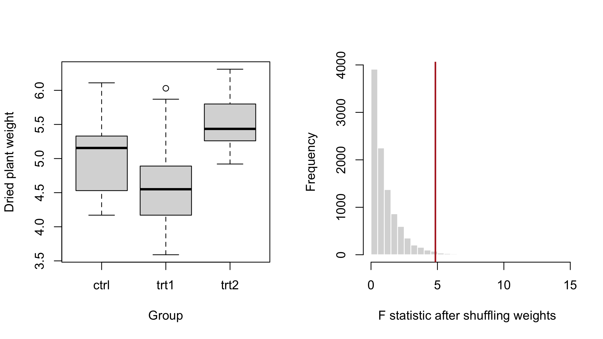

install.packages("permute", repos = c(
"https://gavinsimpson.r-universe.dev",
"https://cloud.r-project.org"
))Creating a permutation test, two ways
Using permutations() and permutator() with R’s PlantGrowth data
R
Build a permutation test for the PlantGrowth data using shuffled values from permutations() or a set of indices stepped through with permutator().
In my last post on permute, I looked at ordered set partitions and the new formula interface for plots and blocks. This time I want to show two helpers for the next part of writing a permutation test: taking those permutations and doing something with them.
permutations() gives you the shuffled values directly. permutator() gives you a function that hands out the next set of observation indices each time you call it. Both use the same permutation machinery underneath, so we can use them to build the same test in two slightly different ways.
These functions are in the development version of permute. To follow along, install it from my R-universe:
Something different from jackals
Let’s use PlantGrowth, which comes with R. It records dried plant weights under a control and two treatment conditions:
library("permute")
data(PlantGrowth, package = "datasets")
aggregate(weight ~ group, data = PlantGrowth, FUN = mean) group weight
1 ctrl 5.032
2 trt1 4.661
3 trt2 5.526The group means differ, but is that more variation than we’d expect if plant weights were unrelated to the treatments? We can use the overall F statistic from a linear model to measure how different the groups are. Larger values mean more variation between groups relative to the variation within them.
I’ll wrap that calculation in a small function, because we’ll be doing it quite a few times:
f_stat <- function(weight, group) {
fit <- lm(weight ~ group)
unname(summary(fit)$fstatistic[["value"]])
}
observed <- with(PlantGrowth, f_stat(weight, group))
observed[1] 4.846088This is an overall test across the groups. It doesn’t tell us which particular treatments differ.
For the permutation test, we’ll leave the group labels in place and shuffle the weights among them. Under the null hypothesis, we’re assuming those weights are exchangeable across the treatment groups.
Give me the shuffled values
Usually, shuffleSet() returns permuted indices, which we then use to rearrange our data. permutations() does that indexing step for us:
ctrl <- how(nperm = 9999)
set.seed(42)
shuffled <- permutations(PlantGrowth$weight, control = ctrl)
dim(shuffled)[1] 9999 30Each row contains one shuffled version of the weight vector. Columns correspond to the original observation positions, so we can pair every row with the unchanged PlantGrowth$group vector. Here are the first few values from a few rows:
as.matrix(shuffled)[seq_len(3), seq_len(5)] [,1] [,2] [,3] [,4] [,5]
[1,] 6.03 4.50 4.17 5.37 5.14
[2,] 4.81 5.87 5.12 5.29 4.53
[3,] 5.14 4.53 4.50 4.17 6.03Those are plant weights, ready to use. as.matrix() just removes the extra permutation metadata for this little look.
Now fit the model for each row in shuffled and collect the F statistics:
null_values <- apply(shuffled, 1, f_stat, group = PlantGrowth$group)That’s our permutation distribution. The \(p\)-value is the proportion of results at least as large as the observed F statistic, including the observed result itself:
tol <- sqrt(.Machine$double.eps)
p_value <- (1 + sum(null_values >= observed - tol)) /
(length(null_values) + 1)
c(F = observed, p_value = p_value) F p_value
4.846088 0.014200 The small tolerance lets us count ties despite minor numerical differences in the model fits. Adding one to the numerator and denominator includes the observed statistic in this Monte Carlo test. We count the upper tail because larger F statistics are more extreme; there’s no need to double the result for a test of differences in either direction.
We can also have a look at the data and the permutation distribution:
old_par <- par(mfrow = c(1, 2))
boxplot(weight ~ group, data = PlantGrowth,
xlab = "Group", ylab = "Dried plant weight",
col = "grey85")
hist(null_values, breaks = 40, main = "",
xlab = "F statistic after shuffling weights",
col = "grey85", border = "white")
abline(v = observed, col = "firebrick", lwd = 2)
par(old_par)
The observed value sits out in the right tail. For this unrestricted permutation test, there’s evidence of differences among the treatment groups. The p-value is estimated from random permutations, so it will vary with the seed and the number we request.
permutations() works with an atomic vector, rather than a whole data frame. If you give it a factor, it returns the shuffled character labels. It also follows the usual shuffleSet() rules about checking and complete enumeration, so the number of returned rows can differ from the number requested for small permutation spaces. Use the size of the returned object in subsequent calculations, as we did above.
One permutation at a time
Sometimes a loop1 is a more convenient place to fit a model, collect several results, or keep track of progress. That’s one situation where permutator() comes in.
Calling it creates a function. Calling that function returns the next permutation of observation indices. I’ll reset the seed so that we use the same set we used above:
set.seed(42)
next_perm <- permutator(nrow(PlantGrowth), control = ctrl)
null_iter <- numeric(attr(next_perm, "nperm"))
for (b in seq_along(null_iter)) {
i <- next_perm()
null_iter[b] <- f_stat(PlantGrowth$weight[i], PlantGrowth$group)
}Here i contains indices, so PlantGrowth$weight[i] does the shuffling. The iterator’s "nperm" attribute tells us how many permutations are actually in the set; we use that to allocate the results vector.
Once we’ve used all of the permutations, another call returns NULL:
next_perm()NULLAn iterator remembers how far you’ve got. If you run the loop again with this exhausted iterator, it won’t start over; create a fresh one first.
Did the two approaches give us the same F statistics?
all.equal(null_values, null_iter)[1] TRUEThey did. We reset the seed and used the same design, so both helpers worked through the same underlying index permutations. We can calculate the \(p\)-value from the loop results in exactly the same way:
p_iter <- (1 + sum(null_iter >= observed - tol)) /
(length(null_iter) + 1)
c(values = p_value, iterator = p_iter) values iterator
0.0142 0.0142 One detail to keep in mind: permutator() generates and stores the permutation matrix when you create the iterator. It hands out rows one at a time, but it isn’t generating them lazily or removing the need to store the index matrix.
Reusing a set
You can also pass an existing index matrix to permutator(). This is useful when you want several calculations to use exactly the same permutations, or want to revisit a saved set later:
set.seed(42)
indices <- shuffleSet(nrow(PlantGrowth), control = ctrl)
next_perm <- permutator(perms = indices)
i <- next_perm()
head(PlantGrowth$weight[i])[1] 6.03 4.50 4.17 5.37 5.14 6.11Creating another iterator over that matrix starts from the beginning:
replay <- permutator(perms = indices)
identical(i, replay())[1] TRUESupply either perms or the generation arguments such as n, nset, and control. The matrix passed to perms must contain observation indices, such as those returned by shuffleSet(). The shuffled weights from permutations() aren’t interchangeable with that matrix.
For a single vector and a short calculation, I like permutations() with apply(). When the calculation fits more naturally in a loop, or I want to reuse a saved set of indices, permutator() is handy. Both leave the choice of permutation design with how(), so the same workflow extends to restricted designs when the data call for them. The package manual has the details, and feedback is welcome on the issue tracker.
Footnotes
Yes, I know
applyis just a loop…↩︎
Social